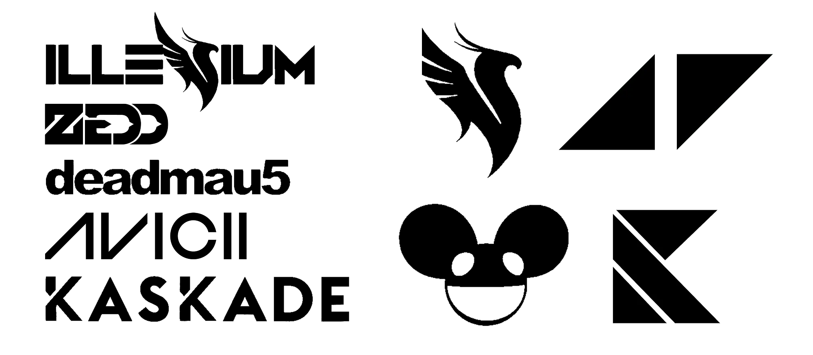
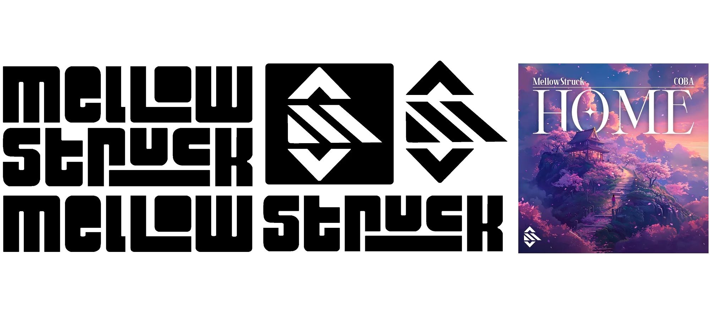

For this project, I worked with a local music producer named MellowStruck. He wanted a clean, geometric, black and white logo to use throughout his album covers, social media posts, and other branded content. The main goal was to combine the letters “M” and “S” into a logo that felt true to his style — a mix of energetic EDM and calming Lofi soundscapes.
To bring this vision to life, I researched logos from successful EDM and Lofi artists to see which visual styles were popular. It was clear that using clean geometric shapes to combine his “M” and “S” into a single logo was the right direction.
Starting with the logo, I broke down the letters “M” and “S” into simple geometric forms. After several iterations, I landed on versions of each letter that shared an identical central shape. From there, it took little effort to overlay the letters and create the final logo design.
For the wordmark, I followed a similar process. My goal was to design “Mellow” and “Struck” so they worked well both side by side and stacked vertically. I began with bold, blocky letters, then extended the foot of the “L” to create an underline that kept the stacked version balanced.

I'm really proud of the logo and wordmark design. The geometric shapes and blocky letters fit well with typical EDM branding, while the softer, rounded corners give it a playful feel that reflects MellowStruck's lighter lofi soundscapes. Keeping it black and white makes the design versatile across different uses.
MellowStruck was very happy with the designs and has used them across his album covers, social media, and YouTube channels. As a repeat client, he also asked me to create album artwork and design his portfolio website, noting that he appreciates my clear communication and creative solutions.